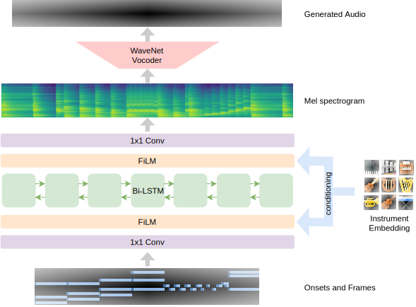

Neural Music Synthesis for Flexible Timbre Control [arXiv]

What is this?
We created a neural music synthesis model named Mel2Mel, which consists of a recurrent neural network conditioned on a learned instrument embedding followed by a WaveNet vocoder. The network takes a note sequence as input and predicts the corresponding Mel spectrogram, which is then used for conditioning the WaveNet vocoder to produce music.
This web demo provides synthesized audio samples and interactive visualizations of the learned timbre embedding space. For more details, please check out our paper submitted to ICASSP 2019.
Synthesized Audio Samples
To create the training dataset, we have downloaded 334 MIDI files crawled from www.piano-midi.de and used FluidSynth and the default SoundFont of MuseScore to synthesize the ground-truth audio.
Below are the actual audio samples used in our perceptual experiments. The three columns to the right have the output of our music synthesis model corresponding to the three loss functions we used, and the three columns to the left are provided for reference. You can listen to 14 test tracks × 10 instruments × 6 configurations = 840 audio segments in total.
Explore the timbre space
The 2-dimensional timbre embedding space is visualized below, annotated with the 10 instrument icons. You can select either spectral centroids or mean energy for colorcoding the space. The Mel spectrogram is shown corresponding to the point where the mouse cursor is on, and you can listen to the synthesized sound by clicking on the embedding space.
100-instrument timbre space visualization
This is a visualization of the 100-instrument embedding space that was briefly mentioned in the paper. The embedding space is 10-dimensional, and a t-SNE in 3D was obtained for visualization. Each dot below represents an instrument, color-coded according to the spectral cenroid or the mean energy. You can drag over the cluster of dots to rotate them, and click on each dot to play a sample of the corresponding SoundFont.
Try with your own MIDI files

The example above plays pre-rendered Mel spectrograms and audio. Try our TensorFlow.js demo, where you can run the Mel2Mel model directly on browser. You can also upload your own MIDI file in this demo. The demo requires a WebGL-enabled browser such as desktop Chrome, and it may not run properly on mobile browsers or external monitors.